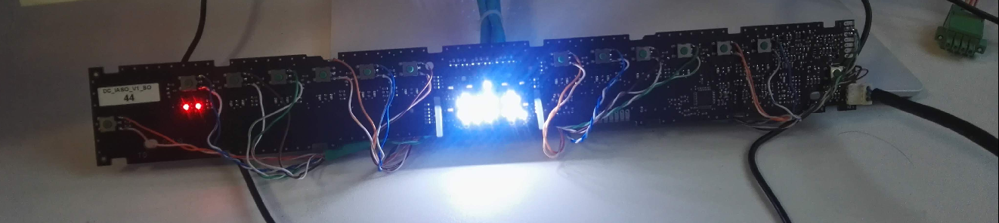
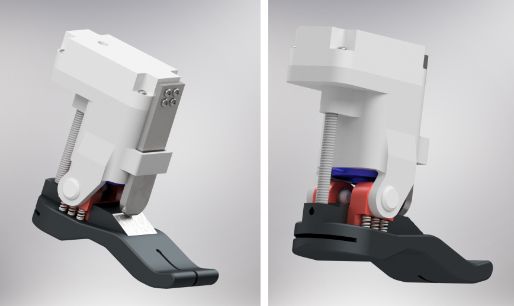
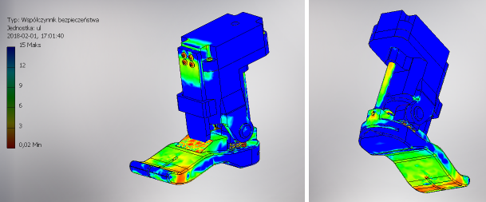
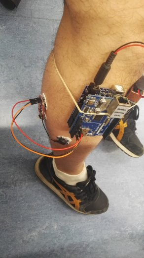

Projects
Bosch
"Anything-as-a-service": Framework for delivering service brokers for containerized applications in private cloud
This project was a result of my work on the Service Broker for Containerized PostgreSQL in Private Cloud. The idea was to create a framework that would allow for the easy development and deployment of service brokers for various containerized applications in private cloud environments. The framework was designed to be flexible and extensible, allowing developers to create service brokers for different types of applications and services.
Goal of the project was to create a solution which will help developers ion the company to create service brokers for their applications in a standardized way. With that solution, my team could achieve the approach to have "anything-as-a-service" in our private cloud, which means that any application could be offered as a service in the cloud marketplace with a service broker. Only requirement was to implement the service on the Kubernetes environment.
Test system for verification integration between service broker and cloud infrastructure
Part of the solution for the service broker was also a dedicated quality assurance system which verifies the functionality of the service broker and its integration with the cloud infrastructure. This system includes automated integration testing to ensure that the service broker works correctly in various use cases and meets the required standards for quality and security.
Implementation of this system involved designing test scenarios, creating automated tests using Pytest, and setting up a CI/CD pipeline based on Jenkins to run these tests.
As a test environment, we used a Kind cluster to simulate the cloud infrastructure to have also possibility to execute test locally on developers machine.
Test environment was designed as a dedicated Kubernetes cluster with all necessary components to run the service broker and execute tests and it was implemented by other team member.
Smart Canteen - AI-powered queue management system for company canteen
The Smart Canteen project was a hackathon-winning solution for managing canteen queue management. The system uses computer vision and AI techniques to monitor the queue in the company canteen and provide real-time information about waiting times and queue length to employees. The solution was designed to improve the efficiency of the canteen service and enhance the overall dining experience for employees.
System is using a cameras available in the canteen to monitor the queue and analyze the data using computer vision algorithms. The system provides real-time updates on waiting times and queue length through a user-friendly interface which is a static web app application.
Solution does not store any images but only analyze the data which is provided by the embedded software of the camera. Frontend is created with a Angular framework and backend is based on Python and Azure Functions. Computer vision algorithms are implemented using OpenCV. All data is stored in NoSQL database.
In next stage of the project i was responsible to create an API which frontend app uses by the canteen staff to manage menu and online notifications.
The Smart Canteen solution was deployed on Azure cloud and is currently used by company employees in Warsaw. Architecture of the system is based on microservices and serverless computing, which allows for scalability and flexibility in handling varying workloads.
PostgreSQL Service Broker for Private Cloud
The project involved developing a Service-broker application that registers PostgreSQL databases in the cloud marketplace as a service (as-a-service). The application was designed to integrate with cloud infrastructure (Kubernetes OpenShift) and provide a seamless experience for users to provision and manage PostgreSQL databases in a private cloud environment.
Cloud app to continuously verify connection with cloud data services
The idea of the app was to create a scheduled service which will test the availability of offered services in a private cloud. The app was automatically detecting to which kind of service it is bounded to and based on this information, relevant module was used to create a connection and test the exchange of data. This scheduled process was serving also REST endpoint with all metrics.
flaskas a web frameworkpytestas a test frameworkmkdocsas a documentation- Strategy as a design pattern
- Services: Redis, PostgreSQL, MariaDB, Prometheus, ELK, MongoDB
CLI for credential manager app
Goal of this project was to create a python wrapper over corporate credential manager app. Beside, it was crucial to make a separation of concerns for all automation scripts where secrets were managed.
clickas a CLI frameworkpytestas a test frameworkmkdocsas a documentation
BSH
Algorithm and tool for automated LED brightness evaluation
One of the software requirements for home appliances is to robustly control the brightness of the fascia panel LED's. My job was to find if it is possible to measure the brightness in a reproducible and reliable way.
Having a camera and electronics in a dark box, I could design a software which will automatically measure the the brightness of the LED's based camera adjustments, images and LED properties.
Research included all variants and all conditions. All results were prepared as a presentation with a detailed explanation of how to measure, record the results and how to deal with measurement errors.

Private
Web app for Secret Santa gift exchange management
This is a hobby project which was created to manage the Secret Santa gift exchange in my family. The app allows users to create a group, invite participants, and randomly assign gift recipients while keeping the identities secret. It also includes features for managing wish lists.
This project was a great opportunity to practice web development skills and evaluate vibe coding approach with GitHub Copilot and agentic AI tools for software development and automation.
flaskas a web frameworkpytestas a test frameworkjinja2as a template enginesqliteas a database
Machine Learning application in prediction of outcome after osteophytectomy in Forester disease
- Award at Global Spine Congress, Los Angeles 2022.
Powered ankle-foot prosthesis
This project was part of my Bachelor thesis and publication. The goal was to design a powered ankle-foot prosthesis as a complete device. This device can mimic the natural movement of the human foot during gait. The project involved research on existing solutions, implementing a control algorithm based on muscle signals, building an EMG signal detector, and evaluating the performance of the control system.
As a result of this project, I prepared a bachelor thesis and publication. The design of the prosthesis included mechanical components, sensors, and actuators, stress calculations and intuitive control system based on the user's muscle signals.


Control system of a powered ankle-foot prosthesis
During my internship in Bristol Robotics Laboratory, my main task was to find out and create a design of control system of artificial foot. The idea of this project was to prove that robotic human leg can be controlled intuitively by brain and muscle signal.
The first step was to do a research about all already known solutions for that kind of problem. During this research, also important was to study the anatomy, physiology of a human lower limbs and gait biomechanics. Based on this research I have set theoretical assumptions and I derived the formula for muscle force based on the amplification of the neural signals
Next step was to determine the design scheme based on these theoretical assumptions. With this scheme, other specific mathematical equations were possible to calculate.
In a practical part of the project was to create a EMG detector of own design. It was necessary to collect sample data and based on this data, simulate the signal for designed algorithm. Major task on this stage was to analyze the signal and separate it from the noise. Thus, then, the prepared signal could be used as an input and evaluation of output control signal was possible.
The final step was evaluate the whole algorithm and adjust all constant values in order to best replicate the physiological movement of the foot during gait.
Scientific paper was prepared as a result of this project
- Scientific research
- Building own EMG signal detector based on Arduino
- Analyzing EMG signal from human gait
- Research of dynamic algorithm to mimic human gait with prosthesis based on collected data and physics of construction prototype
